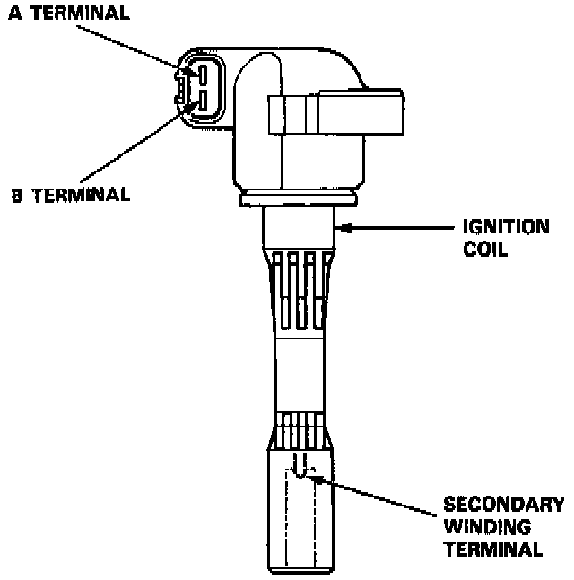
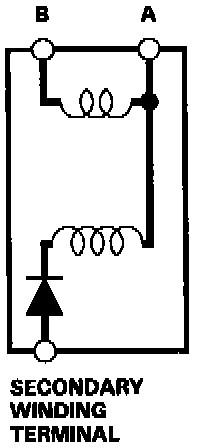

Ignition Coil: Testing and Inspection
INSPECTION1. With the ignition switch OFF, remove the ignition coil.


2. Using an ohmmeter, measure resistance between the terminals. Replace the coil if the primary winding resistance is not within specifications.
Between terminals A and B: 0.9 - 1.1 ohms
NOTE: Resistance will vary with the coil temperature; specification is at 25°C (77°F).
3. If primary winding resistance is OK, substitute a known good ignition coil and check the system operation.
If the system is normal, replace the original ignition coil.